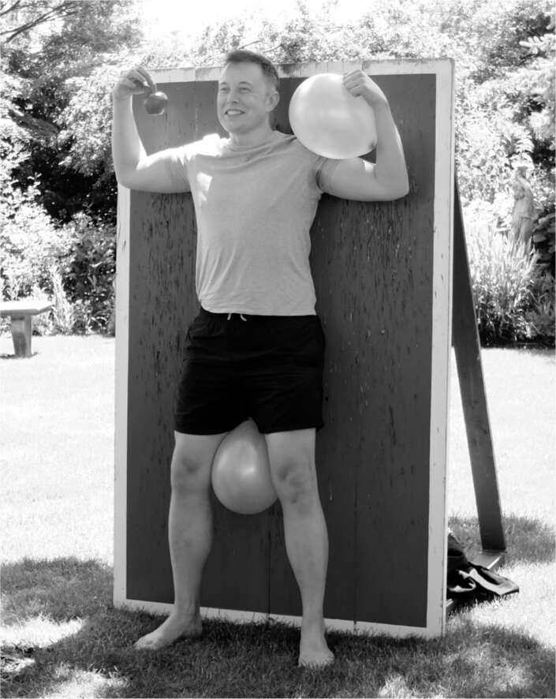

Tài chính Tesla, tháng 12 năm 2008
Musk không thể tận hưởng niềm vui từ hợp đồng với NASA quá vài phút. Thực tế, mức độ căng thẳng của anh không hề giảm bớt. SpaceX có thể đã nhận được một sự ân xá vào dịp Giáng sinh, nhưng Tesla vẫn đang lao thẳng đến bờ vực phá sản vào cuối năm 2008. Công ty sẽ hết tiền vào đêm Giáng sinh. Cả công ty lẫn cá nhân Musk đều không đủ tiền trong ngân hàng để trả lương cho kỳ tiếp theo.
Musk đã kêu gọi các nhà đầu tư hiện tại của mình tài trợ cho một vòng gọi vốn cổ phần mới chỉ với 20 triệu đô la. Số tiền này chỉ đủ để Tesla duy trì hoạt động thêm vài tháng. Nhưng khi anh nghĩ rằng kế hoạch đã hoàn tất, anh phát hiện ra rằng một nhà đầu tư đang do dự: VantagePoint Capital, do Alan Salzman lãnh đạo. Và để phát hành cổ phần mới, tất cả các nhà đầu tư hiện tại đều phải đồng ý.
Salzman và Musk đã dành vài tháng qua để bất đồng về chiến lược. Có lúc họ đã cãi nhau tại trụ sở của Tesla đến mức nhân viên có thể nghe thấy. Salzman muốn Tesla trở thành nhà cung cấp bộ pin cho các công ty ô tô khác, chẳng hạn như Chrysler. “Điều đó sẽ giúp tài trợ cho sự tăng trưởng của Tesla,” Salzman nói. Musk cho rằng điều đó thật điên rồ. “Salzman đang cố gắng ép buộc chúng tôi phải bám víu vào một công ty ô tô truyền thống,” anh nói, “và tôi nghĩ, con tàu đó sắp chìm.” Salzman rất tức giận vì Tesla đang đốt tiền đặt cọc của khách hàng Roadster, mặc dù những chiếc xe vẫn chưa được sản xuất. “Mọi người nghĩ rằng họ đã đặt cọc, chứ không phải là một khoản vay không có bảo đảm để tài trợ cho công ty. Về mặt đạo đức, điều đó là sai.” Musk đã có thể nhờ luật sư bên ngoài đưa ra ý kiến rằng điều đó là hợp pháp. Salzman cũng bị phản cảm bởi hành vi của Musk: “Anh ấy rất khắt khe với mọi người và vô tâm một cách không cần thiết. Đó chỉ là một phần DNA của anh ấy. Tôi không thích điều đó.”
Trong một cuộc gọi hội đồng quản trị không chính thức với Kimbal đang nghe, Salzman đã cố gắng đặt nền móng để loại bỏ Musk khỏi vị trí CEO. “Tôi rất tức giận về những gì những kẻ ngu ngốc độc ác này đang cố gắng làm với Elon,” Kimbal nói. “Tôi bắt đầu hét lên, ‘Không đời nào, không đời nào, các người không được làm thế. Các người là đồ ngu ngốc.’ ” Antonio Gracias cũng tham gia cuộc gọi. “Không, chúng tôi ủng hộ Elon,” anh nói. Kimbal đã gọi cho anh trai mình, người đã có thể ngăn chặn một cuộc bỏ phiếu của hội đồng quản trị. Anh ấy đang tập trung cao độ đến mức anh ấy thậm chí không hề tức giận.
Salzman và các cộng sự nhất quyết yêu cầu Musk đến văn phòng của họ để trình bày chi tiết nhu cầu vốn của Tesla trong tương lai. “Anh ấy như đang phẫu thuật tim hở, còn chúng tôi thì cố gắng đảm bảo anh ấy không truyền nhầm nhóm máu,” Salzman nói. “Khi một người nắm quyền kiểm soát quá lớn, lại đang chịu nhiều áp lực, thì đó là một tình huống rất nguy hiểm.”
Musk nổi giận. “Chúng ta phải làm ngay nếu không sẽ không trả được lương,” anh nói với Salzman. Nhưng Salzman khăng khăng họ phải gặp nhau vào tuần sau. Ông còn ấn định thời gian gặp lúc 7 giờ sáng, khiến Musk càng thêm tức giận. “Tôi là cú đêm, kiểu như, trời ơi, chết tiệt,” anh nói. “Salzman làm vậy với tôi vì hắn ta là một tên khốn.” Musk cảm thấy Salzman thích thú với cơ hội nhìn thẳng vào mắt anh và nói không, và đó chính xác là điều đã xảy ra.
Musk có thể tha thứ, như anh đã làm với các cộng sự PayPal của mình. Nhưng có một vài người khiến anh nổi cơn thịnh nộ, gần như mất lý trí. Martin Eberhart là một. Và Alan Salzman là một người khác. Musk nghĩ rằng Salzman cố tình đẩy Tesla vào phá sản. “Hắn ta đúng là đồ tồi,” Musk nói. “Khi tôi nói hắn là đồ tồi, đó là miêu tả, không phải miệt thị.”
Salzman bình tĩnh phủ nhận cáo buộc của Musk và dường như không bận tâm đến những lời lăng mạ. “Chúng tôi không có bất kỳ âm mưu nào để chiếm đoạt công ty hoặc ép buộc nó phá sản,” ông nói. “Điều đó thật vô lý. Vai trò của chúng tôi chỉ đơn giản là hỗ trợ công ty và đảm bảo vốn được sử dụng hợp lý.” Bất chấp những công kích cá nhân của Musk, ông thực sự bày tỏ sự ngưỡng mộ. “Anh ấy là động lực duy nhất đứng sau công ty, và tôi phải thừa nhận rằng anh ấy đã thành công. Tôi ngả mũ kính phục.”
Để vượt qua quyền phủ quyết của Salzman về vòng gọi vốn mới, Musk vội vàng tái cấu trúc tài chính sao cho không phải phát hành thêm cổ phiếu mà thay vào đó là vay nợ nhiều hơn. Cuộc gọi hội nghị quyết định diễn ra vào đêm Giáng sinh, hai ngày sau khi SpaceX được NASA trao hợp đồng. Musk đang ở nhà Kimbal tại Boulder, Colorado, cùng với Talulah Riley. “Tôi đang ngồi dưới sàn gói quà cho bọn trẻ, còn Elon thì nằm trên giường, gọi điện thoại, điên cuồng cố gắng giải quyết chuyện này,” cô nhớ lại. “Giáng sinh rất quan trọng với tôi, nên ưu tiên của tôi là bảo vệ bọn trẻ khỏi tình huống này. Tôi cứ nói, ‘Hôm nay Giáng sinh, sẽ có phép màu thôi.’ ”
Và phép màu đã đến. VantagePoint cuối cùng đã ủng hộ kế hoạch, cũng như các nhà đầu tư khác trong cuộc gọi. Musk bật khóc. “Nếu mọi chuyện diễn ra theo chiều hướng khác, Tesla đã chết,” anh nói, “và có lẽ giấc mơ về xe điện cũng sẽ chết theo trong nhiều năm.” Vào thời điểm đó, tất cả các công ty ô tô lớn của Mỹ đều đã ngừng sản xuất xe điện.
Trong nhiều năm, một trong những lời chỉ trích nhắm vào Tesla là công ty đã được “cứu trợ” hoặc “hỗ trợ” bởi chính phủ vào năm 2009. Thực tế, Tesla không nhận tiền từ Chương trình Cứu trợ Tài sản Rắc rối (TARP) của Bộ Tài chính, thường được gọi là “gói cứu trợ”. Theo chương trình này, chính phủ đã cho General Motors và Chrysler vay 18,4 tỷ đô la khi họ trải qua quá trình tái cấu trúc phá sản. Tesla không xin bất kỳ khoản tiền nào từ TARP hoặc gói kích thích kinh tế.
Điều Tesla nhận được vào tháng 6 năm 2009 là khoản vay 465 triệu đô la có lãi suất từ một chương trình của Bộ Năng lượng. Chương trình Cho vay Sản xuất Phương tiện Công nghệ Tiên tiến đã cho các công ty vay tiền để sản xuất ô tô điện hoặc tiết kiệm nhiên liệu. Ford, Nissan và Fisker Automotive cũng nhận được các khoản vay.
Khoản vay của Bộ Năng lượng dành cho Tesla không phải là một dòng tiền mặt ngay lập tức. Không giống như gói cứu trợ cho GM và Chrysler, khoản vay này được gắn với các chi phí thực tế. "Chúng tôi phải chi tiền rồi mới gửi hóa đơn cho chính phủ", Musk giải thích. Vì vậy, tấm séc đầu tiên mãi đến đầu năm 2010 mới đến. Ba năm sau, Tesla đã trả hết khoản vay cùng với 12 triệu đô la tiền lãi. Nissan trả nợ vào năm 2017, Fisker phá sản, và tính đến năm 2023, Ford vẫn còn nợ tiền.
Một nguồn vốn quan trọng hơn cho Tesla đến từ Daimler. Vào tháng 10 năm 2008, giữa lúc Tesla gặp khủng hoảng và SpaceX liên tục thất bại trong việc phóng tên lửa, Musk đã bay đến trụ sở của công ty Đức tại Stuttgart. Các giám đốc điều hành của Daimler nói với ông rằng họ quan tâm đến việc tạo ra một chiếc ô tô điện và họ có một nhóm dự định đến thăm Hoa Kỳ vào tháng 1 năm 2009. Họ mời Tesla trình bày đề xuất về phiên bản điện của chiếc xe Smart của Daimler.
Khi trở về, Musk nói với JB Straubel rằng họ nên gấp rút lắp ráp một nguyên mẫu xe Smart chạy điện trước khi nhóm Daimler đến. Họ cử một nhân viên đến Mexico, nơi có sẵn xe Smart chạy xăng, để mua một chiếc và lái về California. Sau đó, họ lắp động cơ điện và bộ pin của Roadster vào đó.
Khi các giám đốc điều hành của Daimler đến Tesla vào tháng 1 năm 2009, họ có vẻ khó chịu vì đã được sắp xếp gặp một công ty nhỏ và thiếu vốn mà họ hầu như chưa từng nghe đến. "Tôi nhớ họ rất cáu kỉnh và muốn rời khỏi đó càng sớm càng tốt", Musk nói. "Họ đang mong đợi một bài thuyết trình PowerPoint nhàm chán." Sau đó, Musk hỏi họ có muốn lái thử chiếc xe không. "Ý anh là sao?", một người trong nhóm Daimler hỏi. Musk giải thích rằng họ đã tạo ra một mô hình hoạt động.
Họ ra bãi đậu xe, và các giám đốc điều hành của Daimler lái thử. Chiếc xe lao vút đi ngay lập tức và đạt tốc độ 96 km/h trong khoảng bốn giây. Điều đó đã khiến họ kinh ngạc. "Chiếc Smart đó chạy rất nhanh", Musk nói. "Bạn có thể nhấc bánh trước lên với chiếc xe đó." Kết quả là Daimler đã ký hợp đồng với Tesla để cung cấp bộ pin và hệ thống truyền động cho xe Smart, một ý tưởng không khác mấy so với ý tưởng mà Salzman đã đề xuất. Musk cũng đề nghị Daimler xem xét đầu tư vào công ty. Vào tháng 5 năm 2009, ngay cả trước khi các khoản vay của Bộ Năng lượng được phê duyệt, Daimler đã đồng ý mua 50 triệu đô la cổ phần của Tesla. "Nếu Daimler không đầu tư vào Tesla vào thời điểm đó, chúng tôi đã chết", Musk nói.

Một niềm yêu thích mạo hiểm gần như kỳ quái: Can đảm đối mặt với một người ném dao bị bịt mắt tại một trong những bữa tiệc sinh nhật của anh ấy